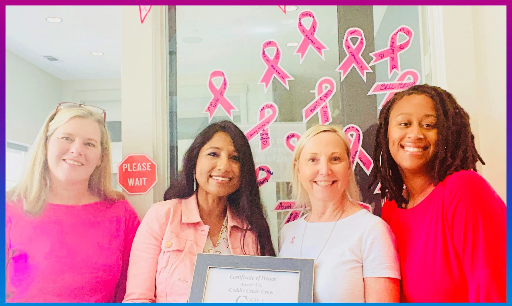

Breast Self-Examination (BSE)
Learn how to perform early detection checks with guided educational resources. Start early from 17-18 years of age. Understand the look & feel of your Breast to detect any change or abnormality.
BCH generates One-stop Life-Saving Screening Cards, Research papers, Educational videos in simple layman’s terms to empower everyone about the symptoms of Cancer, help detect early, and treat accurately. Mobile Application “BCH KNOW YOUR BREASTS” - Breast Self Exam (BSE) Reminder for ALL GENDERS in 27 LANGUAGES" is available on the App Store and Google Play Store.